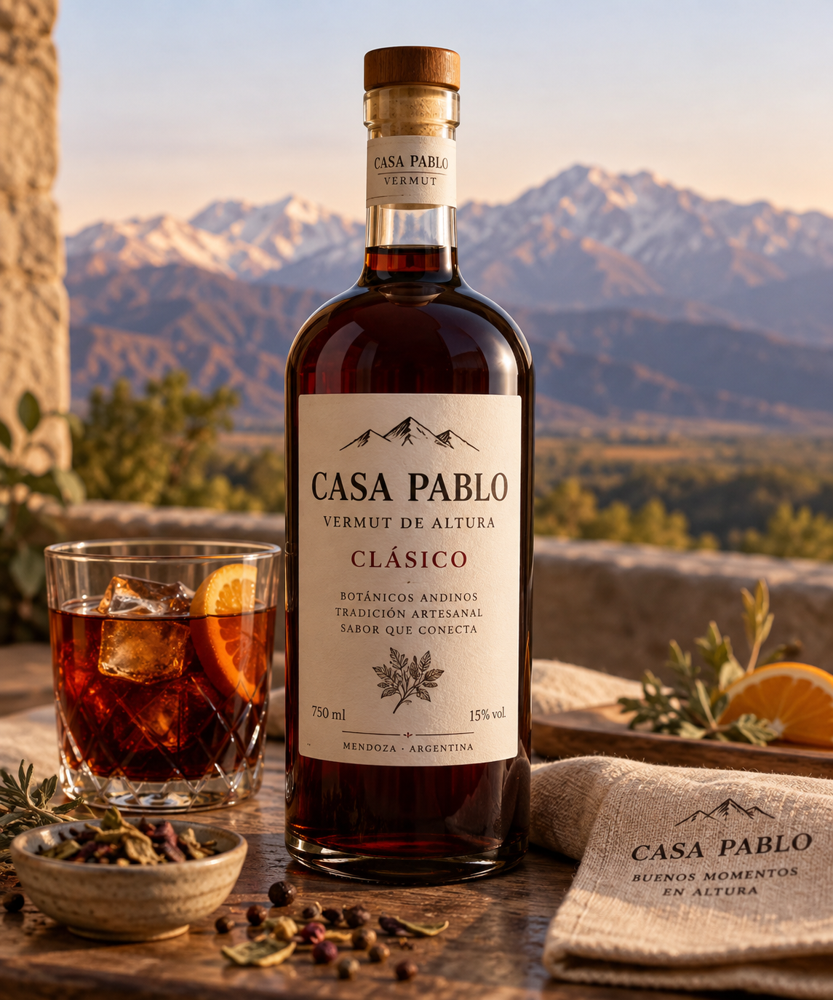
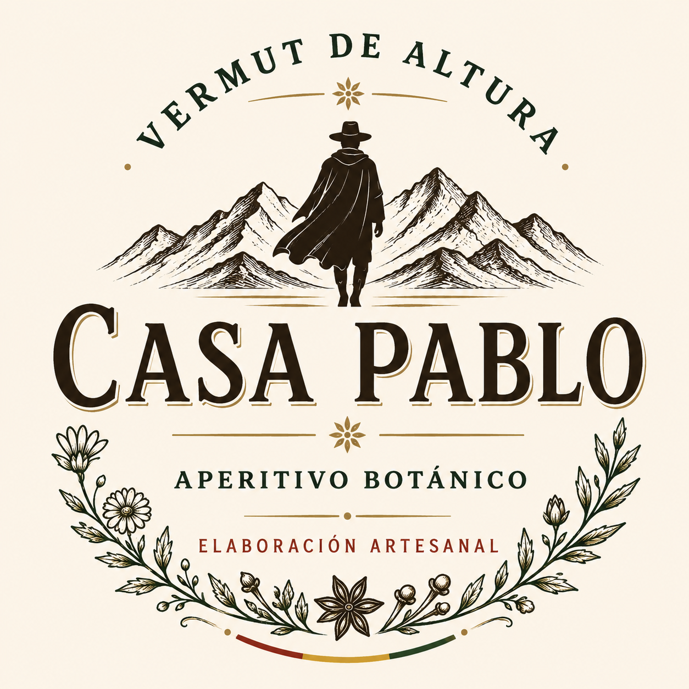
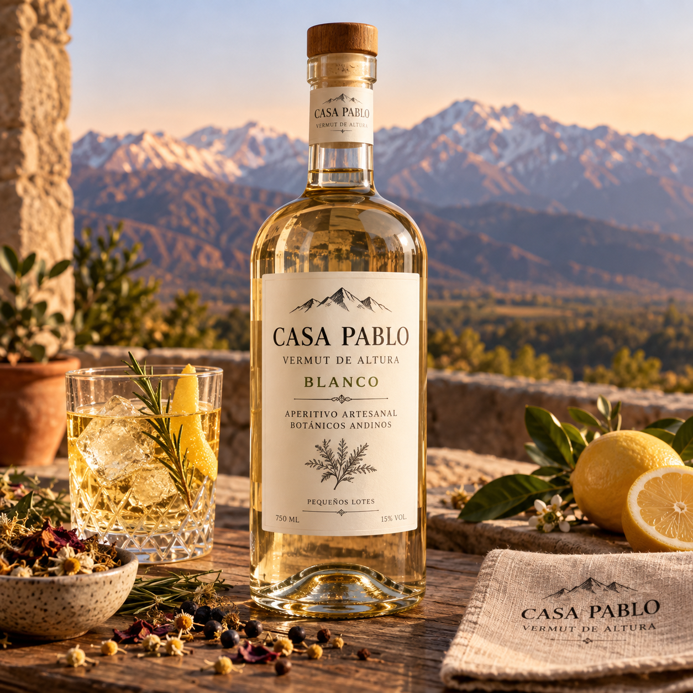
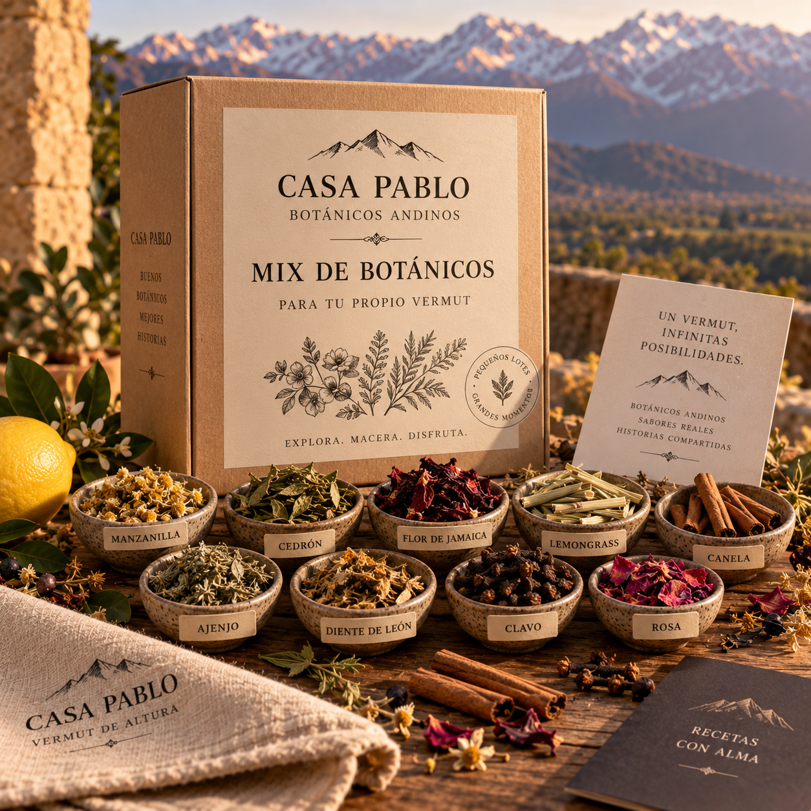

Vermut de Altura Clásico
Vermut artesanal elaborado con botánicos andinos.
Precio: 12 €


Vermut artesanal elaborado con botánicos andinos.
Precio: 12 €

Vermut blanco artesanal, fresco y aromático.
Precio: 12 €

Selección de botánicos para preparar y experimentar con tu propio vermut.
Precio: 7 €
Un vermut artesanal con muchísimo sabor. ¡Me encantó!
El Vermut Blanco es fresco y aromático. Ideal para compartir.
El mix de botánicos me pareció una propuesta original y muy completa.